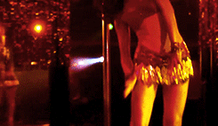

Quentin Tarantino
Cherry, go-go danseuse, s'est fait arracher la jambe lors d'une attaque.
Wray, son ex-copain, veille sur elle. Mais Cherry a beau être au plus mal,
elle n'a pas dit son dernier mot.
Tandis que les malades se multiplient et
deviennent des agresseurs enragés,
Cherry et Wray prennent la tête d'une armée destinée à empêcher l'épidémie de se propager.
Si des millions d'individus sont contaminés et beaucoup succombent, une poignée
se battra jusqu'au bout...